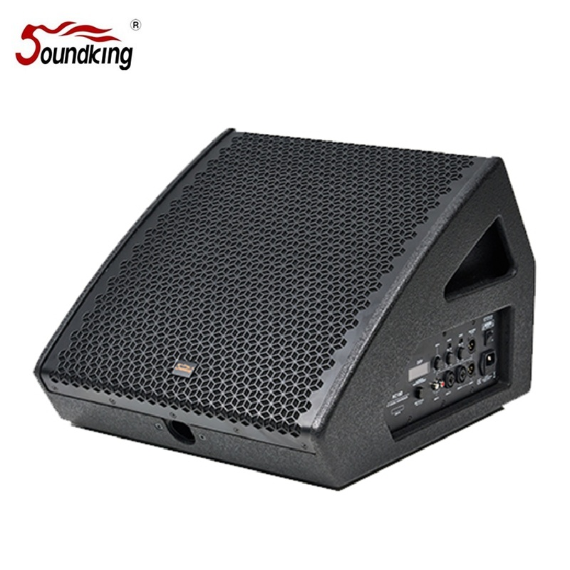

12인치 동축 드라이버와 Class D 앰프, 48kHz/24bit DSP를 통합한 액티브 스테이지 모니터. 128dB 최대 음압과 90°×90° 균일한 커버리지로 스테이지 모니터링과 근접 확성 양쪽 모두에 최적화된 콤팩트 액티브 솔루션입니다.

12인치 동축 드라이버, Class D 앰프, 48kHz/24bit DSP를 하나의 콤팩트 캐비닛에 통합한 액티브 모니터. 스테이지 모니터링과 근접 확성 양쪽 모드를 모두 지원합니다.
KC12D는 12인치 LF 유닛과 1.73" HF 컴프레션 드라이버를 동축으로 배치한 2웨이 액티브 스피커입니다. 동축 구조로 포인트 소스 방사를 구현하여 90°×90°의 균일한 커버리지와 정확한 사운드 이미지를 제공합니다.
내장된 48kHz/24bit DSP는 LCD 화면을 통해 3밴드 EQ, 리미터, 딜레이, 볼륨을 직접 제어할 수 있으며, Class D 앰프와 결합하여 고효율·경량·고출력을 동시에 실현합니다. 53°의 웨지 각도로 스테이지 모니터링과 확성용 근접 사운드 시스템을 자유롭게 전환할 수 있습니다.
12인치 LF 드라이버와 1.73" HF 드라이버를 동축으로 배치한 액티브 2웨이 모니터. Class D 앰프(LF 300W + HF 50W)와 48kHz/24bit DSP가 내장되어 LCD 화면으로 3밴드 EQ, 리미터, 딜레이, 볼륨을 직접 조절할 수 있습니다. 스테이지 모니터링과 근접 확성 두 가지 모드를 모두 지원합니다.
| 모델명 | KC12D |
| 타입 | 액티브 동축 2웨이 모니터 |
| 주파수 응답 | 55Hz – 20kHz |
| 출력 (LF / HF) | 300W + 50W (Class D) |
| 최대 음압 (Max SPL) | 128dB |
| 커버리지 (H × V) | 90° × 90° |
| LF 드라이버 | 12" (1개) |
| HF 드라이버 | 1.73" 컴프레션 (1개) |
| 내장 DSP | 48kHz / 24bit · LCD 컨트롤 |
| DSP 기능 | 3밴드 EQ · 리미터 · 딜레이 · 볼륨 |
| 모니터링 앵글 | 53° (듀얼 모드) |
| 입력 단자 | XLR-1/4" 콤보 · 3.5mm 보조 |
| 출력 단자 | XLR Link Out |
| 전원 | AC 220V – 240V |
| 캐비닛 재질 | 합판 (Plywood) |
| 색상 | 블랙 |
| 크기 (H × W × D) | 314 × 400 × 465 mm |
| 무게 | 14 kg |
53° 웨지 형상 캐비닛으로 스테이지 모니터링과 근접 확성 두 가지 모드를 모두 지원합니다. 한 대의 KC12D로 다양한 현장 요구에 유연하게 대응할 수 있습니다.
DSP 내장 액티브 동축 모니터로 모니터링과 확성 양쪽 환경에 모두 활용 가능합니다.